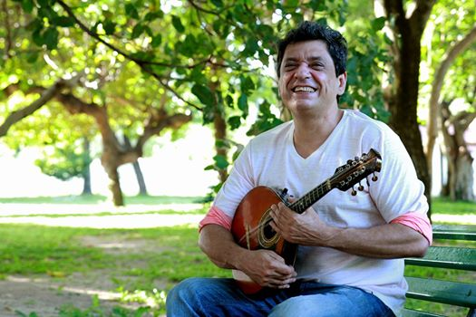

CARLINHOS PATRIOLINO
Carlinhos Patriolino Carlinhos Patriolino, nasceu em Sobral, no dia 19 de dezembro de 1961. É um multi-instrumentista, arranjador e compositor cearense. Filho do compositor Carlos Patriolino e dona Teresinha Damasceno de Albuquerque, Carlinhos começou a tocar por influência do pai, aos seis anos, quando presenteado com um violão. Aos treze anos, Carlinhos já dominava quatro instrumentos de cordas (violão, bandolim, cavaco e guitarra) destacando-se como um exímio solista. Autodidata e de talentos múltiplos, Carlinhos Patriolino é hoje um dos principais nomes da música instrumental brasileira. Sua carreira é marcada por grandes apresentações, tocou e gravou ao lado de vários cantores e instrumentistas consagrados da MPB como Emílio Santiago, Wilson Simonal, Altamiro Carrilho, Belchior, Paulinho Moska, Sivuca, Sandra de Sá, Ednardo, Fausto Nilo, Zélia Duncan, Chico César, Alcione, Amelinha, Orlando Morais e Paulo Moura, entre outros. Cita como as principais influências musicais Pat Metheny, Jaco Pastorius, Pixinguinha, Macaúba do Bandolim, Joe Pass e Marcio Resende. Talentoso e versátil, reconhecido pela crítica por sua musicalidade ímpar, Carlinhos Patriolino vem dedicando-se ao trabalho autoral onde passeia por gêneros e ritmos com destreza e muita personalidade, sua virtuose pode ser conferida em seus últimos trabalhos autorais: “Rabisco” e “Sambopeando”, este último realizado em parceria com o pianista João Braga. Fonte: Ceará Cultural
“Cada nota é uma lágrima” - Guinga sobre Patriolino
Partituras
 Carlinhos Patriolino – Rabisco
Carlinhos Patriolino – Rabisco